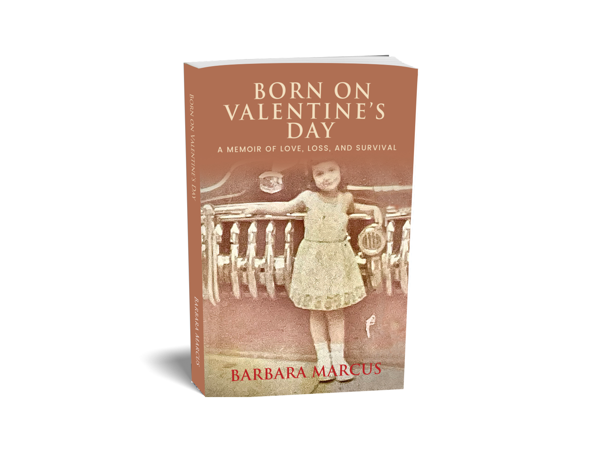

Voice
Fierce, vulnerable, and quietly witty — Barbara's voice carries both pain and hope.
Themes
Trauma, resilience, the search for worth, and the strange, healing power of storytelling.
About the Book
Barbara Marcus was born on Valentine's Day, 1948, a day symbolizing love, but her childhood was anything but. In this raw and beautifully written memoir, she chronicles a life shaped by abuse, neglect, and a mother's erratic affection.
From early memories of heartbreak and hope in Brooklyn to navigating the emotional wreckage left by a string of father figures, Born on Valentine's Day is a courageous exploration of trauma, resilience, and ultimately, healing.
Learn More
#1 Best Sellers in Teen & Young Adult Inspirational & Personal Growth eBooks
“I didn't want to put it down — I felt the child's fear and the adult's grief, but also the determination to survive.”
Jolanda Blum · Amazon Review

“A memoir for anyone who has ever struggled to feel worthy of love — and for those who know the power of a story well told.”
Get in Touch
Contact Barbara
For media inquiries, book-club Q&As, speaking engagements, or just to share your story.
Send a Message